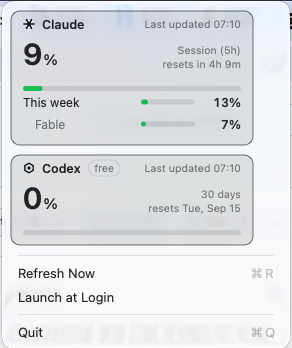

Headroom puts both providers' usage in your menu bar. One glance tells you whether you can start something big — or whether you're ten minutes from a wall.
Free and open source · macOS, Linux, Windows

What it does
One card per provider. The big number is the window that runs out soonest — everything else sits beneath it.
Green below 75%, amber from 75%, red from 90%. The menu bar goes red at the same threshold, so you notice without opening anything.
Rate limited, offline, or a bad response — it says which. It never blames the network for a problem the network didn't cause.
A hiccup keeps your last reading and dims it. You still see something true, marked as slightly old.
The CLIs rotate their tokens periodically. One failed poll is treated as a rotation window, not a sign-out.
Each has its own polling and backoff. Codex being rate limited can't disturb your Claude reading, or the other way round.
No notifications, no history, no cost accounting. It sits there and tells you one thing, accurately.
Your credentials
Headroom reads the tokens the CLIs already store on your machine. It contains no code that writes, refreshes or deletes them — each CLI owns and rotates its own.
A provider you aren't signed into is simply left out — not shown as an error.
Install
Swift 6 and a terminal. No installer, no account, nothing to sign up for.
# clone and build
git clone https://github.com/sunnixx/headroom.git
cd headroom
./Scripts/build-app.sh
open dist/Headroom.app
# tray dependencies, then build
sudo apt install libayatana-appindicator3-dev libgtk-3-dev
git clone https://github.com/sunnixx/headroom.git
cd headroom
./Scripts/build-linux.sh
# clone and build
git clone https://github.com/sunnixx/headroom.git
cd headroom
swift build -c release
Move Headroom.app to /Applications before enabling Launch at Login.
macOS asks for Keychain access on first run — the item belongs to the Claude Code CLI.
Works on KDE, XFCE, Cinnamon, MATE and Budgie. GNOME hides tray icons unless the AppIndicator extension is installed — that applies to every tray app, not just this one.
The notification area has no text beside an icon, so the percentage is drawn into the icon itself. The tooltip names every signed-in provider.